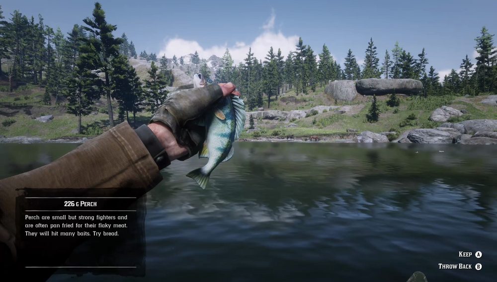

Perch are widespread in rivers and lakes throughout the land. Small but tasty, they swim near the surface to feed on algae and water plants and will take a variety of food baits, particularly bread. Sunny weather, when they are at their most active, is best for Perch fishing. There are rumors of a Legendary Perch somewhere in the Roanoke Ridge region.
Perch can be found along Little Creek River, Dakota River north of Diablo Ridge, Lake Isabella, Owanjila (rivers north and south of the dam and the lake), Moonstone Pond, Hani's Bethel, O'Creagh's Run, Kamassa River north of Bluewater Marsh and along the shorelines of Annesburg.
